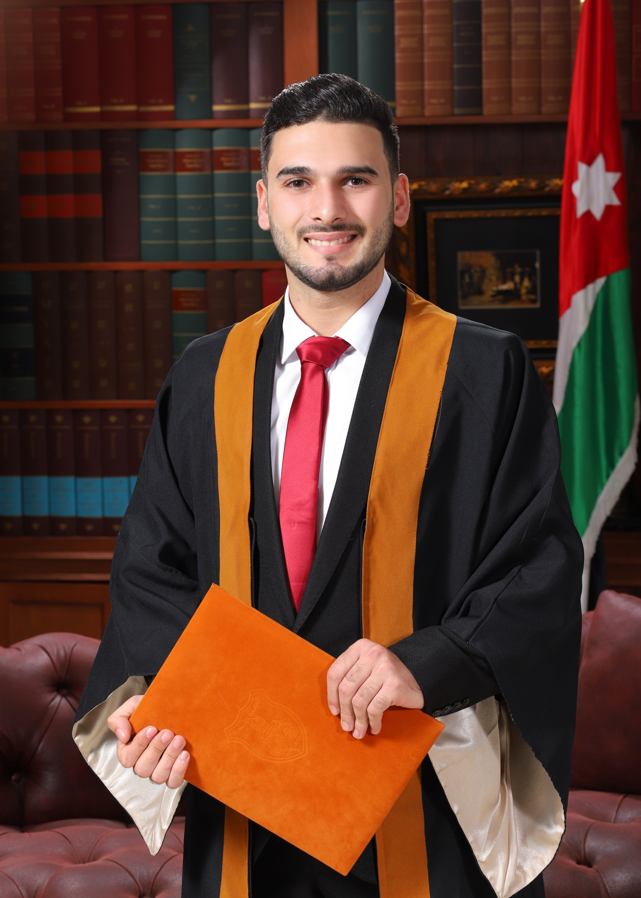

Who am I now? I am a student at Luminus College, majoring in software engineering, passionate about programming and technology, looking forward to learning and development, designing and building websites and programs, and I want to do more.
Undergraduate period - Maturity stage I started my university life at the University of Jordan in Amman, majoring in mechanical engineering. The challenge was difficult, but I was able to graduate with a good grade. During my university period, I worked on many projects such as: air conditioning, design, and engineering maintenance
High School -- the start of the journey I joined Al-Baqa'a Secondary School for Boys to enter the scientific major. My passion for science and technology pushed me to get high grades, and I finished this stage with distinction. Note (the photo is from my delivery of the gold medal in chess to high school students)